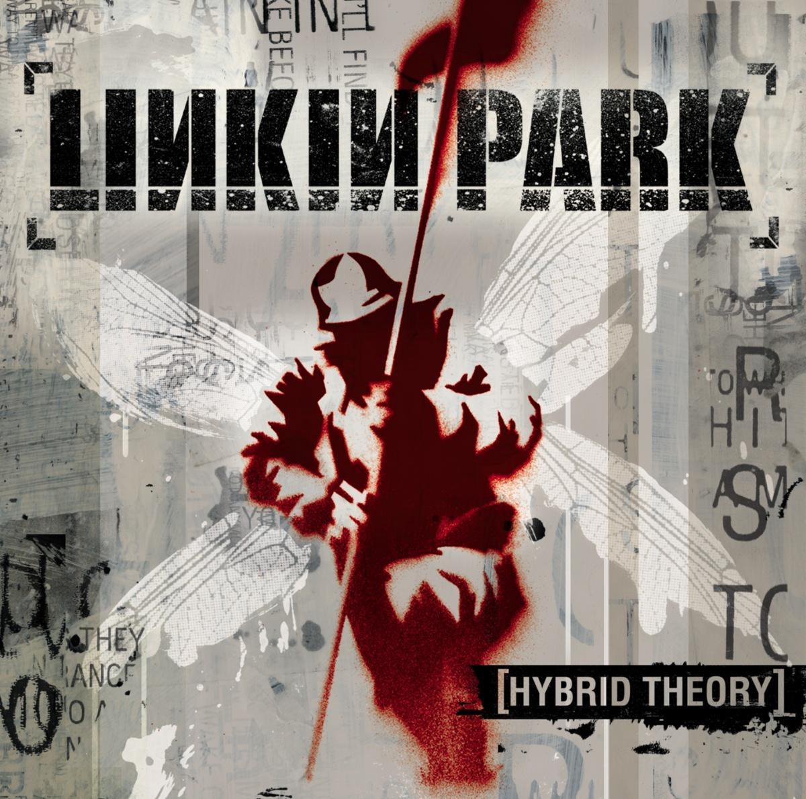
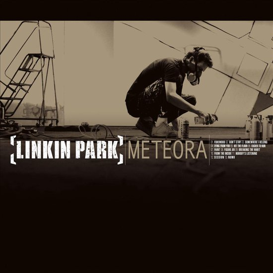
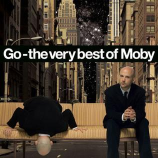

Mijn muziek
Favoriet nummer
Playlist
Corona - Rythm of the Night
Depeche Mode - Enjoy The Silence
Black - Wonderful Life
Albums
Linkin Park - Hybrid Theory

Linkin Park - Meteora

Moby - Go, The very best of Moby

Festivals
Pukkelpop
Rock Werchter
Tomorrowland
Graspop
Dour
Pukkelpop
Terug naar boven
Rock Werchter
Terug naar boven
Tomorrowland
Terug naar boven
Graspop
Terug naar boven
Dour
Terug naar boven